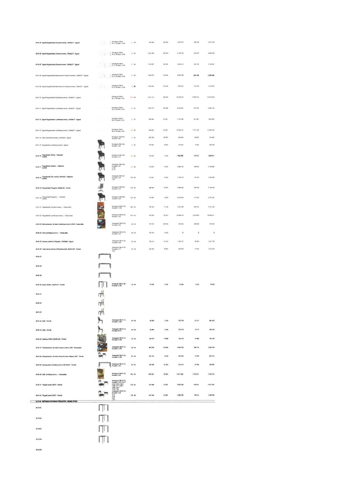

| Tétel | Megjegyzés | Menny. | Egys. | Anyag e.ár (net HUF) | Díj e.ár (net HUF) | Anyag összesen (net HUF) | Díj összesen (net HUF) | Anyag+Díj összesen (net HUF) |
|---|---|---|---|---|---|---|---|---|
| 45-61-05 Egyedi tárgyalóasztal (Popovics-terem), 160x80x77 - Egyedi | Konszig jel: BM-6-01.1 | 2,0 | db | 933 986 | 104 593 | 1 867 972 | 209 186 | 2 077 158 |
| 45-61-06 Egyedi tárgyalóasztal (Popovics-terem), 160x80x77 - Egyedi | Konszig jel: BM-6-01.2 | 4,0 | db | 1 046 290 | 104 593 | 4 185 162 | 418 373 | 4 603 535 |
| 45-61-07 Egyedi tárgyalóasztal (Popovics-terem), 160x80x77 - Egyedi | Konszig jel: BM-6-01.3 | 2,0 | db | 1 479 607 | 104 593 | 2 959 215 | 209 186 | 3 168 401 |
| 45-61-08 Egyedi tárgyalóasztal lekerekített (Popovics-terem), 120x80x77 - Egyedi | Konszig jel: BM-6-01.4 | 2,0 | db | 1 022 879 | 110 094 | 2 045 758 | 220 189 | 2 265 946 |
| 45-61-09 Egyedi tárgyalóasztal lekerekített (Popovics-terem), 160x80x77 - Egyedi | Konszig jel: BM-6-01.5 | 1,0 | db | 1 358 224 | 115 428 | 1 358 224 | 115 428 | 1 473 652 |
| 45-61-10 Egyedi tárgyalóasztal (Látványtári-terem), 160x80x77 - Egyedi | Konszig jel: BM-6-02.1 | 18,0 | db | 1 041 112 | 159 462 | 18 740 016 | 2 870 315 | 21 610 331 |
| 45-61-11 Egyedi tárgyalóasztal (Látványtári-terem), 160x80x77 - Egyedi | Konszig jel: BM-6-02.2 | 4,0 | db | 1 263 732 | 133 298 | 5 054 927 | 533 192 | 5 588 119 |
| 45-61-12 Egyedi tárgyalóasztal (Látványtári-terem), 130x80x77 - Egyedi | Konszig jel: BM-6-02.3 | 2,0 | db | 859 094 | 110 931 | 1 718 188 | 221 861 | 1 940 050 |
| 45-61-13 Egyedi tárgyalóasztal (Látványtári-terem), 130x80x77 - Egyedi | Konszig jel: BM-6-02.4 | 12,0 | db | 859 094 | 110 931 | 10 309 131 | 1 331 169 | 11 640 300 |
| 45-61-14 Asztal (Látványtári-terem), 140x70x75 - Egyedi | Konszig jel: BM-6-03 | 1,0 | db | 536 208 | 85 887 | 536 208 | 85 887 | 622 094 |
| 45-61-15 Tárgyalószék (Látványtári terem) - Egyedi | Konszig jel: BM-6-04 | 1,0 | db | 197 837 | 8 402 | 197 837 | 8 402 | 206 239 |
| 45-61-16 Tárgyalószék (Alelnök), - Fejlesztés (családi) | Konszig jel: BM-6-05 | 8,0 | db | 197 837 | 8 402 | 1 582 698 | 67 213 | 1 649 911 |
| 45-61-17 Tárgyalószék (Alelnök), - Fejlesztés (családi) | Konszig jel: BM-6-06 | 12,0 | db | 173 847 | 8 402 | 2 086 164 | 100 820 | 2 186 983 |
| 45-61-18 Tárgyalószék (Operációs vezető), 58x78x48 - Fejlesztés (családi) | Konszig jel: BM-6-07 | 10,0 | db | 173 847 | 8 402 | 1 738 470 | 84 016 | 1 822 486 |
| 45-61-19 Tárgyalószék (Tárgyaló), 56x78x48 - Termék | Konszig jel: BM-6-08 | 10,0 | db | 296 849 | 16 975 | 2 968 492 | 169 749 | 3 138 240 |
| 45-61-20 Tárgyalószék (Tárgyaló), - Fejlesztés (családi) | Konszig jel: BM-6-09 | 14,0 | db | 173 847 | 8 402 | 2 433 860 | 117 623 | 2 551 481 |
| 45-61-21 Tárgyalószék (Popovics-terem), - Restaurálás | Konszig jel: BM-6-10 | 28,0 | db | 187 200 | 17 540 | 5 241 592 | 491 161 | 5 732 752 |
| 45-61-22 Tárgyalószék (Látványtári-terem), - Restaurálás | Konszig jel: BM-6-10.1 | 47,0 | db | 703 925 | 53 531 | 33 084 475 | 2 515 936 | 35 600 411 |
| 45-61-23 Dohányzóasztal, kör alakú (Látványtári-terem), Ø120 - Restaurálás | Konszig jel: BM-6-10.2 | 2,0 | db | 137 272 | 123 025 | 274 543 | 246 050 | 520 594 |
| 45-61-24 Fotel (Látványtári-terem) - Restaurálás | Konszig jel: BM-6-10.3 | 0,0 | db | 197 837 | 8 402 | 0 | 0 | 0 |
| 45-61-25 Alacsony szekrény (Tárgyaló), 150x80x90 - Egyedi | Konszig jel: BM-6-104 | 2,0 | db | 726 135 | 44 752 | 1 452 271 | 89 504 | 1 541 775 |
| 45-61-26 Irodai polcos szekrény (Főosztályvezető), 80x45x180 - Termék | Konszig jel: BM-6-105 | 4,0 | db | 234 501 | 18 861 | 938 005 | 75 444 | 1 013 449 |
| 45-61-27 | NaN | NaN | NaN | 0 | 0 | 0 | 0 | 0 |
| 45-61-28 | NaN | NaN | NaN | 0 | 0 | 0 | 0 | 0 |
| 45-61-29 | NaN | NaN | NaN | 0 | 0 | 0 | 0 | 0 |
| 45-61-30 Asztal (Szék), 140x70x75 - Termék | Konszig jel: BM-6-109 | 1,0 | db | 73 328 | 2 702 | 73 328 | 2 702 | 76 030 |
| 45-61-31 | NaN | NaN | NaN | 0 | 0 | 0 | 0 | 0 |
| 45-61-32 | NaN | NaN | NaN | 0 | 0 | 0 | 0 | 0 |
| 45-61-33 | NaN | NaN | NaN | 0 | 0 | 0 | 0 | 0 |
| 45-61-34 Szék - Termék | Konszig jel: BM-6-113 | 4,0 | db | 92 684 | 3 429 | 370 735 | 13 717 | 384 452 |
| 45-61-35 Szék - Termék | Konszig jel: BM-6-113 | 4,0 | db | 92 684 | 3 429 | 370 735 | 13 717 | 384 452 |
| 45-61-36 Szekrény (Büfé), 80x45x100 - Termék | Konszig jel: BM-6-114 | 1,0 | db | 134 373 | 15 809 | 134 373 | 15 809 | 150 182 |
| 45-61-37 Dohányzóasztal, kör alakú (Popovics-terem), Ø60 - Restaurálás | Konszig jel: BM-6-115 | 3,0 | db | 667 678 | 118 904 | 2 003 035 | 356 712 | 2 359 748 |
| 45-61-38 Dohányzóasztal, kör alakú (Popovics-terem előtér), Ø70 - Termék | Konszig jel: BM-6-116 | 2,0 | db | 231 375 | 8 510 | 462 750 | 17 020 | 479 770 |
| 45-61-39 Catering asztal (Látványtári terem előtér), 80x150x75 - Termék | Konszig jel: BM-6-117 | 2,0 | db | 156 706 | 18 792 | 313 413 | 37 585 | 350 997 |
| 45-61-40 Szék (Látványtári terem) - Restaurálás | Konszig jel: BM-6-118 | 19,0 | db | 335 365 | 72 330 | 6 371 943 | 1 374 271 | 7 746 214 |
| 45-61-41 Tárgyalóasztal, 80x75 - Termék | Konszig jel: BM-6-119 | 12,0 | db | 241 946 | 12 003 | 2 903 350 | 144 031 | 3 047 381 |
| 45-61-42 Tárgyalóasztal, 80x75 - Termék | Konszig jel: BM-6-119 | 5,0 | db | 241 946 | 12 003 | 1 209 729 | 60 013 | 1 269 742 |
